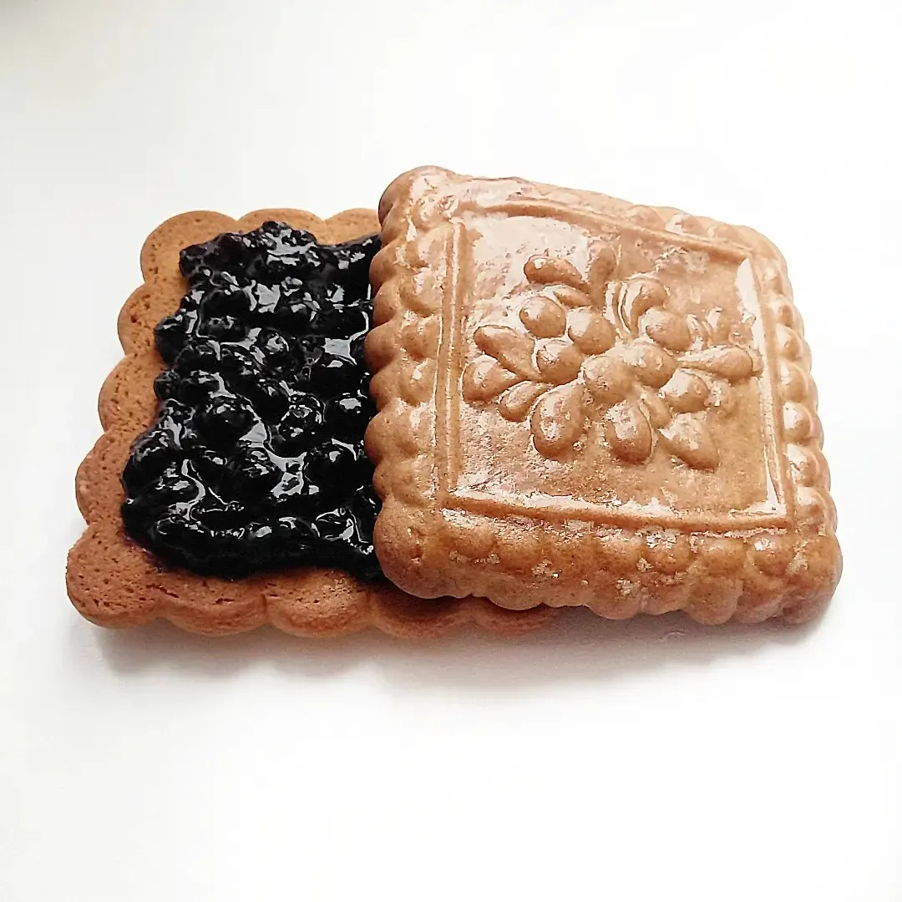
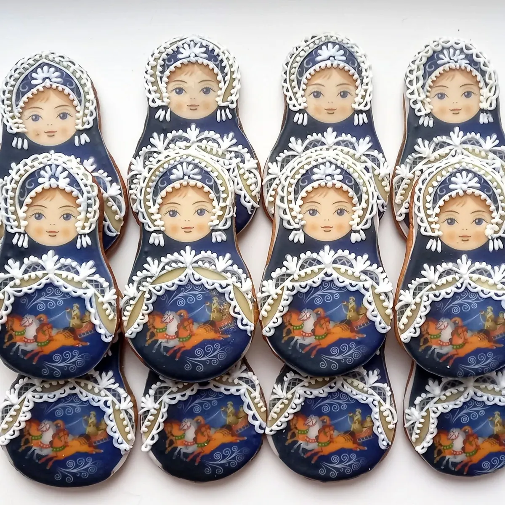
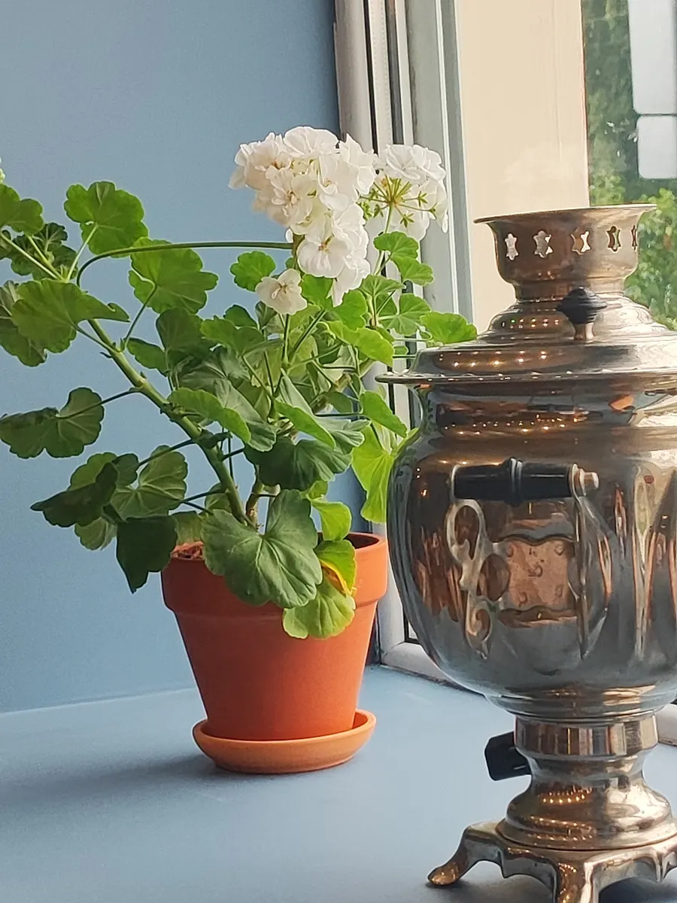
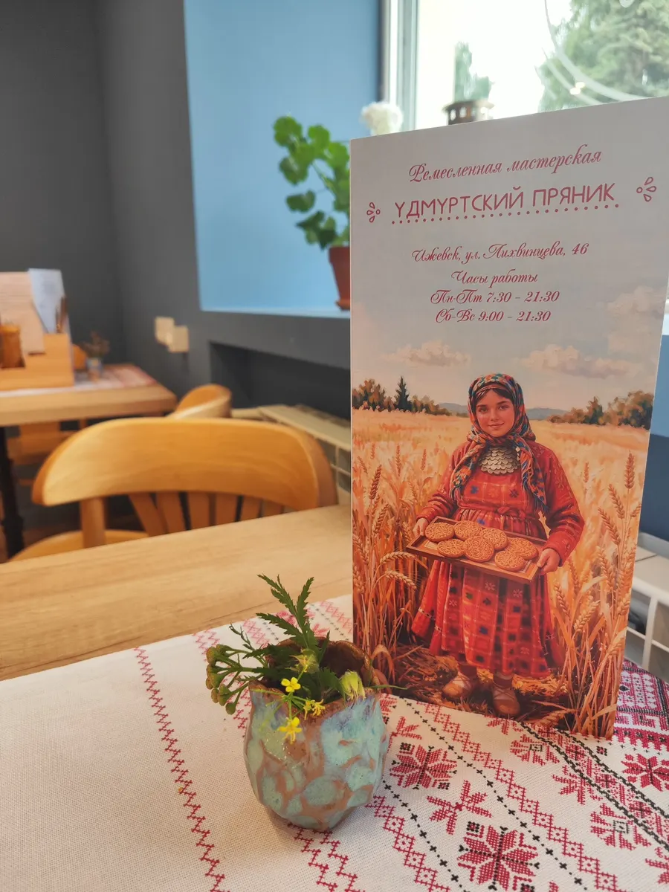

Пекарня и кафе · Ижевск
Удмуртский пряник: пряники и домашняя выпечка в Ижевске
Выберите, что нужно, и дату - заказ в одном сообщении. Состав, оформление и цену назовём при подтверждении.
- Заказ одним сообщением
- Ждём: уточняйте по телефону
- 4,8 и 15 отзывов на Яндекс.Картах

Что можно заказать
Цену называем при подтверждении заказа: она зависит от состава, веса и оформления.
Позиции
- Пряникив отзывах: уникальные, можно взять в подарокуточнить
- Коврижкив отзывеуточнить
- Хлеб на закваске без дрожжейв отзывеуточнить
- Завтраки и обедыв отзывах: удмуртская и русская кухняуточнить
- Травяной чайв отзывеуточнить
Как заказать
Пишете нам
Расскажите, что нужно, на какую дату и на сколько гостей, или выберите в форме ниже.
Согласуем детали
Начинку, декор и цену называем при подтверждении заказа.
Забираете заказ
Адрес: Ижевск, улица Лихвинцева, 46.



Что пишут гости
Расскажут про состав и дадут попробовать
В отзыве: подробно объяснили состав и технологию.
Гостеприимная хозяйка
В отзывах: владелица заботливая, хочется вернуться.
Национальный интерьер
В отзыве: скатерти с вышивкой и национальным орнаментом.
Отзывы с Яндекс.Карт
«Очень приятное место! Вкусные омлеты, травный чай и потрясающие сладости (пряники, коврижки - то что уже попробовали). Без дрожжевой хлеб на закваске - потрясающий, и вкусно, и полезно! В кафе чисто, уютная и доброжелательная атмосфера! Точно рекомендуем к посещению на завтрак или обед!»
Иван Черничкин · 15 июля
«Зашли купить пряники в качестве подарка, все подробно обьяснили какой состав, технологию приготовления, дали попробовать пряники, чтобы не покупать вслепую. Рассказали про хлеб, напоили чаем. Владелица очень гостеприимная и заботливая, место приятное сюда хочется вернуться.»
Ольга Опарина · 11 июля
«Завтракала в новом кафе Удмуртский пряник, приготовили завтрак быстро, было все очень вкусно, в помещении чисто, персонал приветливый, отзывчивый, однозначно рекомендую, меню ориентировано на Удмуртскую и русскую кухню»
Светлана Лимонова · 15 июля
Отзывы с карточки на Яндекс.Картах.
Частые вопросы
Как заказать?
Выберите позицию и дату в форме на странице или напишите в мессенджер. Подтвердим детали и стоимость.
Где вы находитесь?
Ижевск, улица Лихвинцева, 46. уточняйте по телефону.
Сколько это стоит?
Цену называем при подтверждении заказа: она зависит от состава, веса и оформления.
Напишите, что и на какую дату нужно - ответим в течение дня
- Адрес
- улица Лихвинцева, 46, Ижевск
- Часы
- уточняйте по телефону
- Телефон
- +7 (918) 254-22-70